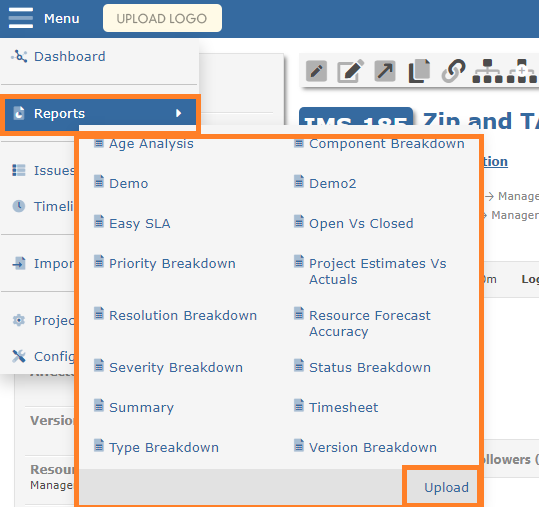
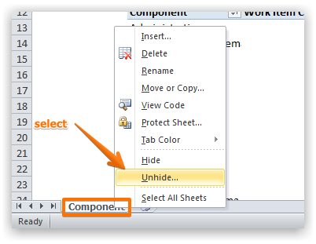
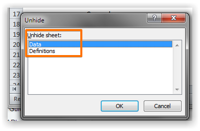
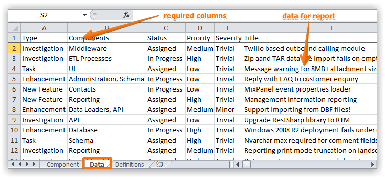
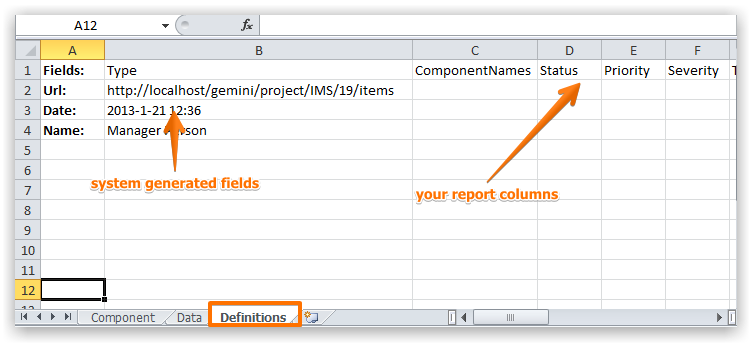
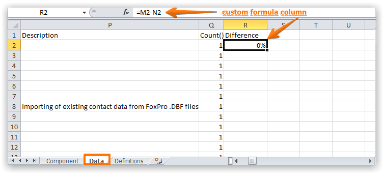
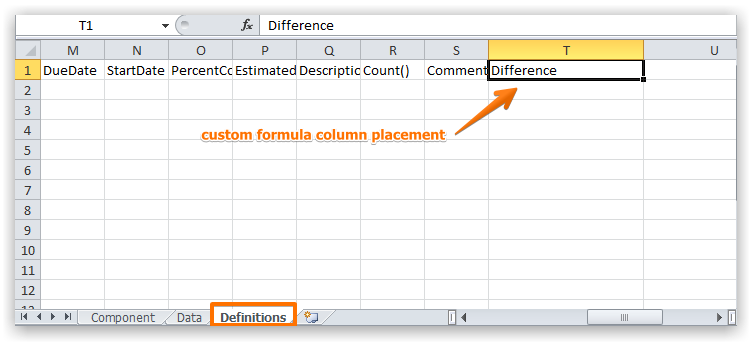
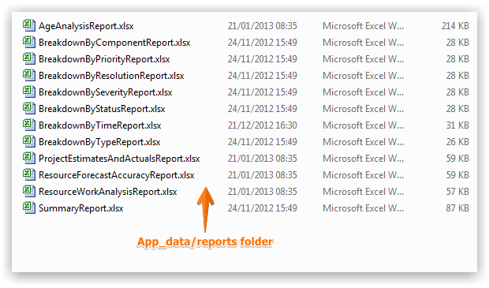

You can create and use your own Excel based reports that are available on every Items Grid.

Use an existing report as the basis for your own report.
Show the two hidden Excel Worksheets entitled "Data" and "Definitions"


Each report consists of two Excel Worksheets:
This worksheet is populated with the data for the report.

You should specify the columns in the report in the first row. Available columns are specified below.
During testing you can specify your own mock data - this will be replaced every time report is generated.
This worksheet is populated with the data for the report.

Do not remove or otherwise change the system fields as highlighted above.
You should specify the columns in the report in the first row. Available columns are specified below.
NoteThe Data and Definitions tab should both list the columns for your report.
Any custom field can also be included in your reports by simply prefixing your custom field with "CF_".
The following columns can be used in your custom report.
| Column | Output |
|---|---|
| IssueKey | The id of the item (e.g. 23456) |
| ProjectName | The project name that the item belongs to (e.g. My Project) |
| ProjectCode | The project code that the item belongs to (e.g. ACME) |
| Title | The title of the item (e.g. Fix Cross-browser issues) |
| Description | The full description of the item (HTML stripped) |
| Reporter | The fullname of the user who reported the item (e.g. Joe Bloggs) |
| ResourceNames | The resources assigned to the item (comma separated) |
| Status | The current status of the item (e.g. Unassigned) |
| Priority | The current priority of the item (e.g. High) |
| Severity | The current severity of the item (e.g. Showstopper) |
| Resolution | The current resolution of the item (e.g. Complete) |
| Type | The type of the item (e.g. Bug) |
| Created | The date and time when the item was created |
| Revised | The date and time when the item was last revised |
| ClosedDate | The date and time this item was closed |
| ResolvedDate | The date and time this item was marked as resolved |
| StartDate | When work should commence on the item |
| DueDate | When work should complete for the item |
| PercentComplete | How much work has been completed (e.g. 25%) |
| LastComment | Latest comment for the item |
| Comments | All comments for the item (comma separated) |
| Points | Allocated points for item |
| OriginatorData | Any associated source data for item (e.g. email address) |
| ComponentNames | Components associated with item (comma separated) |
| FixedInVersion | Any associated version |
| AffectedVersionNumbers | Any associated affected versions (comma separated) |
| Age | Number of days since item created |
| Repeated | Repeat interval for item if any |
| EstimatedEffort | The number of hours and minutes to complete item (0h 0m format) |
| {EstimateEffortMinutes} | Total minutes logged of estimate effort from the item |
| TimeLogged | The number of hours and minutes to logged against item (0h 0m format) |
| RemainingTime | The number of hours and minutes to remaining for item (0h 0m format) |
| ExcessTime | The number of hours and minutes exceeding original estimate (0h 0m format) |
| Votes | The number of votes for this item |
| Visibility | The visibility of the item (e.g. Everyone) |
| Elapsed | Number of minutes since item opened till closure |
| {ParentItemId} | The item id of the parent of the item |
| Count() | Output is always 1 - useful when you need to count individual items |
The advanced fields will cause the item row to repeat for each entry associated with the item.
| Column | Output |
|---|---|
| {Time} | Total minutes logged for this time entry |
| {TimeLogger} | The fullname of the user who create the time entry (e.g. Joe Bloggs) |
| {TimeType} | The type of the time entry (e.g. Billable) |
| {TimeEntryDate} | The date and time of the time entry |
| {TimeComment} | The comment of the time entry |
| {HistoryField} | To see name of the field which have been created or amended |
| {HistoryUser} | The fullname of the user who create or amend the data |
| {HistoryDate} | The date and time when the history field was created or amended |
| {HistoryBeforeValue} | The value of data before the changes |
| {HistoryAfterValue} | The value of data after the changes |
In addition to the above columns list you can also place formulae to the right of the last column (but not in between columns) and these will be applied to all items.


Custom Excel based reports should be placed in the App_data/Reports folder.

NoteYour Gemini Administrator should deploy custom reports